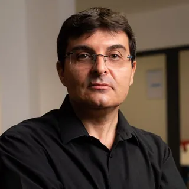

Exco Valliance
Exco Valliance est un groupe positionné sur les métiers de l’expertise-comptable, de l’audit et du conseil, aujourd’hui reconnu par les acteurs de l’économie localeExco Valliance is a group specializing in public accounting, auditing and consulting, now recognized by local economic players.
23cabinets dans l’annuaireoffices in the directory
10services proposésservices offered
3payscountries
Le groupeThe group
Les cabinets comptables Exco Valliance sont implantés sur 14 cabinets en Nouvelle Aquitaine, 1 à Paris, 6 en Pologne et 1 au Portugal.
Répartis en Charente (Angoulême centre, Angoulême Soyaux, Barbezieux, Cognac, Coteaux de Blanzacais), Charente-Maritime (La Rochelle, Rochefort, Royan, Saintes), Gironde (Bordeaux, Mérignac, Lormont, Bruges, Lacanau) ainsi qu’à Paris. Exco Valliance étend également sa présence en Pologne et au Portugal.
L’histoire du cabinet Exco Valliance
Nous formons une communauté animée par 19 associés et 500 collaborateurs dévoués qui accompagnent quotidiennement les dirigeants d’entreprise quelles que soient leur activité ou la taille de leur structure (TPE, PME, ETI), et ce, à toutes les étapes du cycle de vie de leur entreprise, de la création à la transmission.
La mission de notre cabinet comptable
Faire grandir les entreprises, favoriser l’entrepreneuriat et vous guider à chaque phase de votre parcours entrepreneurial, pour vous rendre simple ce qui peut sembler complexe, afin que vous puissiez vous concentrer sur l’essentiel : la croissance de votre entreprise.
Notre groupe, à taille humaine, offre une expertise pointue du marché local, garantissant des conseils adaptés à vos besoins spécifiques.
Chaque client bénéficie d’un service personnalisé et de conseils sur mesure.
Notre équipe pluridisciplinaire s’engage à vous fournir un service de qualité, efficace et professionnel à chaque étape de notre collaboration.
Chez Exco Valliance, nous valorisons la diversité de nos clients, car elle élargit nos perspectives, nous permettant d’apprendre en permanence et de concevoir des solutions innovantes. Chaque entreprise que nous accompagnons apporte son expérience unique, ses défis et ses réussites, enrichissant ainsi notre expertise collective.
Notre approche personnalisée se concrétise par des conseils avisés, prodigués par des équipes spécialisées dans différents domaines tels que la comptabilité, l’audit, la fiscalité, le juridique ou encore la gestion sociale et les ressources humaines.
Véritables partenaires des dirigeants, nous plaçons votre réussite au cœur de nos priorités. Nous nous engageons à vous accompagner de manière efficace et proactive, en vous offrant des services sur mesure adaptés à vos besoins spécifiques. Que ce soit pour la gestion de votre comptabilité, des conseils en gestion financière, ou encore l’optimisation fiscale, nous sommes là pour vous aider à optimiser le pilotage de votre entreprise.
Nous sommes également à même de vous guider dans vos projets de croissance externe, de reprise ou de transmission d’entreprise, mais également de développement international.
Exco Valliance accounting firms are located in 14 offices in New Aquitaine, 1 in Paris, 6 in Poland and 1 in Portugal.
Répartis en Charente (Angoulême centre, Angoulême Soyaux, Barbezieux, Cognac, Coteaux de Blanzacais), Charente-Maritime (La Rochelle, Rochefort, Royan, Saintes), Gironde (Bordeaux, Mérignac, Lormont, Bruges, Lacanau) ainsi qu’à Paris. Exco Valliance étend également sa présence en Pologne et au Portugal.
The history of Exco Valliance
We are a community of 19 partners and 500 dedicated who provide day-to-day support to business leaders, whatever their activity or the size of their structure (VSE, SME, ETI), at every stage of their company’s life cycle, from start-up to transfer.
Our accounting firm’s mission
Growing businesses, promoting entrepreneurship and guiding you through every phase of your entrepreneurial journey, to make what may seem complex simple, so that you can concentrate on what’s essential: growing your business.
Our human-scale group offers in-depth expertise of the local market, guaranteeing advice tailored to your specific needs.
Every customer benefits from personalized service and tailor-made advice.
Our multidisciplinary team is committed to providing you with quality service, efficient and professional every step of the way.
At Exco Valliance we value the diversity of our customers, as it broadens our perspectives, enabling us to learn continuously and design innovative solutions. Each company we work with brings its own unique experience, challenges and successes, enriching our collective expertise.
Our personalized approach takes the form of sound advice, provided by specialized teams in fields such as accounting, auditing, taxation, legal affairs, social management and human resources..
As true partners to managers, we place your success at the heart of our priorities. We are committed to supporting you efficiently and proactively, offering you services tailored to your specific needs. Whether you need accounting management, financial management advice or tax optimization, we’re here to help you optimize your company’s management.
We can also guide you in your plans for external growth, company takeovers and transfers, and international expansion.
Le groupe en chiffresThe group in figures
14
cabinets en Nouvelle Aquitaineoffices in New Aquitaine
7
cabinets en Pologne et au Portugaloffices in Poland and Portugal
500
collaborateursemployees
+ 7000
clients accompagnésaccompanied customers
L’ADN Exco VallianceThe Exco Valliance DNA
L’humainThe human
Notre approche se distingue par notre engagement à créer des relations authentiques avec chacun de nos clients. Que ce soit en interne ou en externe, les relations chez Exco se construisent dans un esprit convivial en plaçant l’humain au centre de nos interactions.Our approach is distinguished by our commitment to creating authentic relationships with each and every one of our customers. Whether internal or external, relationships at Exco are built in a spirit of conviviality, with people at the heart of our interactions.
Confiance et écouteTrust and listening
L’engagement envers nos clients et collaborateurs est au cœur de notre ADN. Nous bâtissons des relations solides et durables fondées sur la confiance, la transparence et le respect mutuel.Commitment to our customers and employees is at the heart of our DNA. We build strong, lasting relationships based on trust, transparency and mutual respect.
Pluridisciplinarité – DiversitéMultidisciplinarity - Diversity
Nous sommes fiers de notre équipe diversifiée et multidisciplinaire, composée d’experts-comptables, de consultants financiers, de juristes, d’auditeurs, de conseillers et de nombreux autres professionnels talentueux.We’re proud of our diverse, multidisciplinary team of chartered accountants, financial consultants, lawyers, auditors, advisors and many other talented professionals.
Ancrage territorialTerritorial roots
Notre ancrage local fait partie intégrante de notre identité et de notre mission. Fiers de notre appartenance, nous mettons un point d’honneur à soutenir la dynamique économique de nos territoires.Our local roots are an integral part of our identity and mission. Proud of our local roots, we make it a point of honor to support the economic dynamism of our territories.
Culture de l’innovationA culture of innovation
Nous recherchons constamment de nouvelles approches pour simplifier les processus complexes et trouver des solutions innovantes.We’re constantly looking for new ways to simplify complex processes and find innovative solutions.
Les associésThe partners
Florie Cabiro-Blanchet
Associée et Expert-comptablePartner and Chartered Accountant
Sandrine Calandre
Associée, Commissaire aux comptes et Expert-comptablePartner, Statutory Auditor and Chartered Accountant
Benoit Chaveroux
Associé, Commissaire aux comptes et Expert-comptablePartner, Statutory Auditor and Chartered Accountant
Louis-Guillaume Blanc
Associé, Commissaire aux comptes et Expert-comptablePartner, Statutory Auditor and Chartered Accountant
Romain Blanchet
Associé et Expert-comptablePartner and Chartered Accountant
David Decours
Associé, Commissaire aux comptes et Expert-comptablePartner, Statutory Auditor and Chartered Accountant
Clément Dussort
Associé et Expert-comptablePartner and Chartered Accountant
Jeanne Gaye
Associée, Expert-comptable, Commissaire aux comptes, Certifiée spécialiste en évaluation d’entreprise CCEFPartner, Chartered Accountant, Statutory Auditor, Certified Business Valuation Specialist CCEF
Eric Guillen
Associé, Commissaire aux comptes et Expert-comptablePartner, Statutory Auditor and Chartered Accountant
José Goncalves
Associé et Expert-comptablePartner and Chartered Accountant
Franck Huyghe
Associé, Commissaire aux comptes et Expert comptablePartner, Statutory Auditor and Chartered Accountant
Nathalie Kahil
Associée, Commissaire aux comptes et Expert-comptablePartner, Statutory Auditor and Chartered Accountant
Carole Lejas
Associée, Commissaire aux comptes et Expert-comptablePartner, Statutory Auditor and Chartered Accountant
Laurent Lepajolec
Gérant, AssociéManaging Partner
Cedric Lhote
Associé et Expert comptablePartner and Chartered Accountant
Patrick Papon
Associé et Expert-comptablePartner and Chartered Accountant
Charles Pereira
Associé et Expert-comptablePartner and Chartered Accountant

Christophe Pot
Associé et Expert-comptablePartner and Chartered Accountant
Guillaume Tardy
Associé et Expert-comptablePartner and Chartered Accountant
Raphaël Vieuxmaire
Gérant Exco Pologne, AssociéManaging Director Exco Poland, Partner
Antoine Vivier
Associé et Expert-comptablePartner and Chartered Accountant
Les cabinets du groupeThe group’s offices
Horaires en direct, services et équipe sur chaque fiche.Live opening hours, services and team on each page.
France métropolitaineMainland France
16 cabinets16 offices
16Charente
17Charente-Maritime
33Gironde
75Paris
International
7 cabinets7 offices
Les services du groupeThe group’s services
Nombre de cabinets du groupe qui proposent chaque service, d’après l’annuaire.Number of the group’s offices offering each service, according to the directory.
- Expertise comptableAccounting23 sur 2323 of 23
- Audit23 sur 2323 of 23
- Gestion sociale, paie et RHPayroll and HR23 sur 2323 of 23
- Juridique et fiscalLegal and tax23 sur 2323 of 23
- ConseilAdvisory23 sur 2323 of 23
- Évaluation d’entrepriseBusiness valuation21 sur 2321 of 23
- Finance et transactionsCorporate finance21 sur 2321 of 23
- Gestion de patrimoineWealth management21 sur 2321 of 23
- International21 sur 2321 of 23
- Vérification OTIIndependent third-party verification21 sur 2321 of 23
Rencontrer un cabinet du groupeMeet one of the group’s offices
Horaires en direct, services et équipe sur chaque fiche : le rendez-vous se demande en ligne.Live opening hours, services and team on each page: book a meeting online.